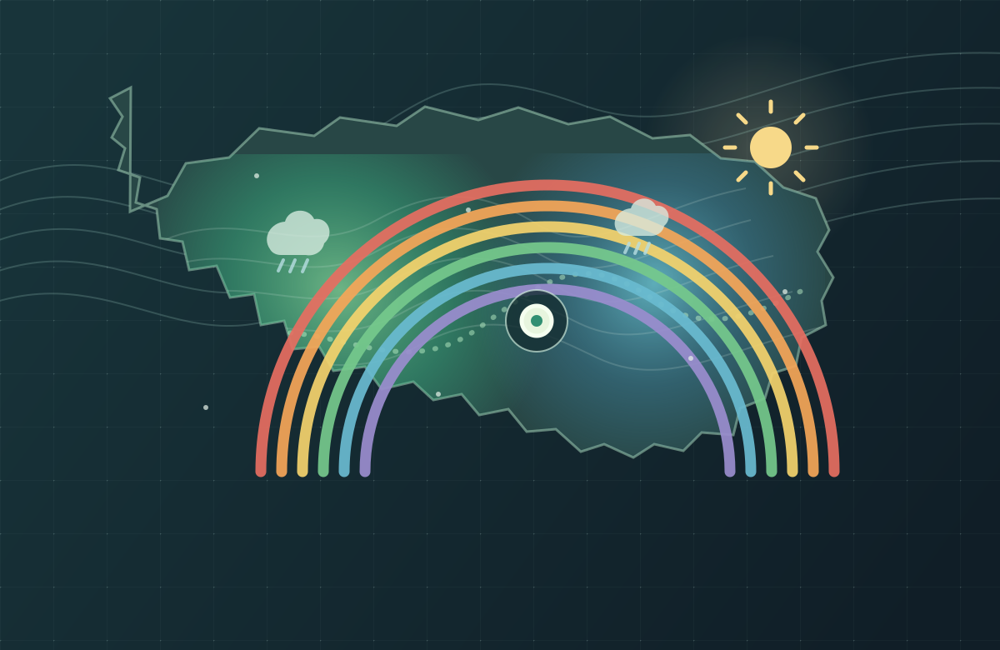
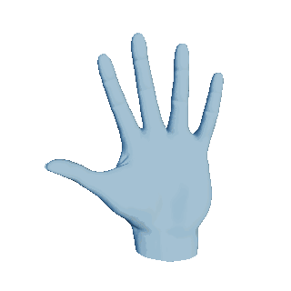
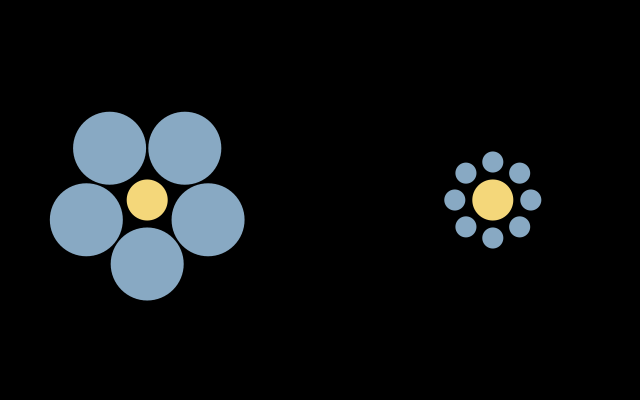
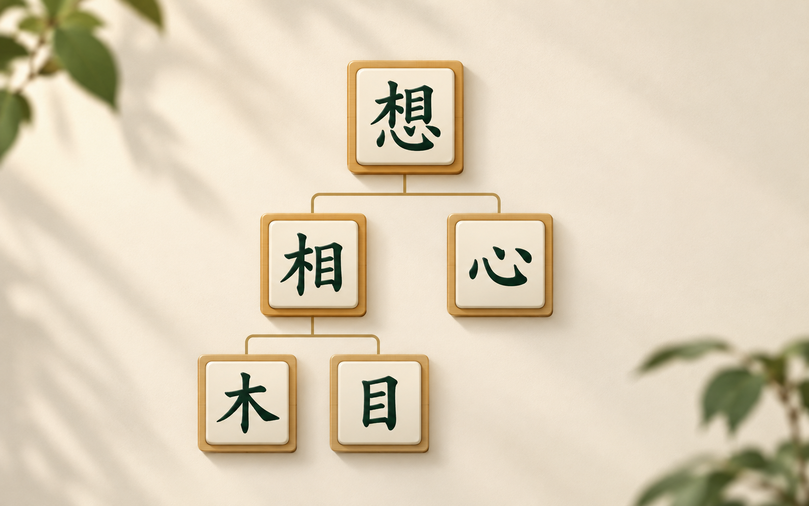
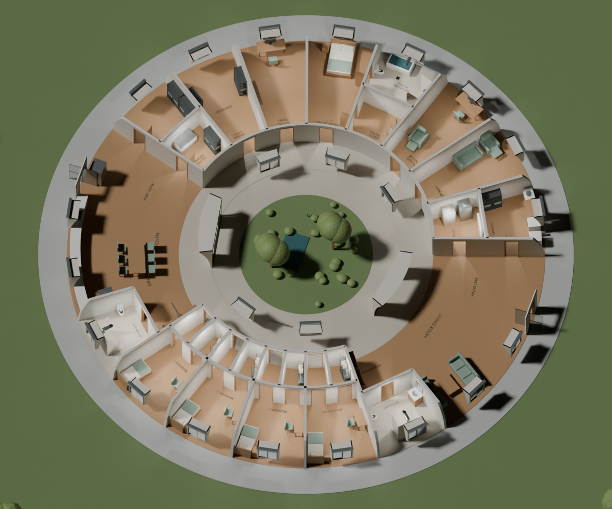
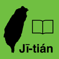
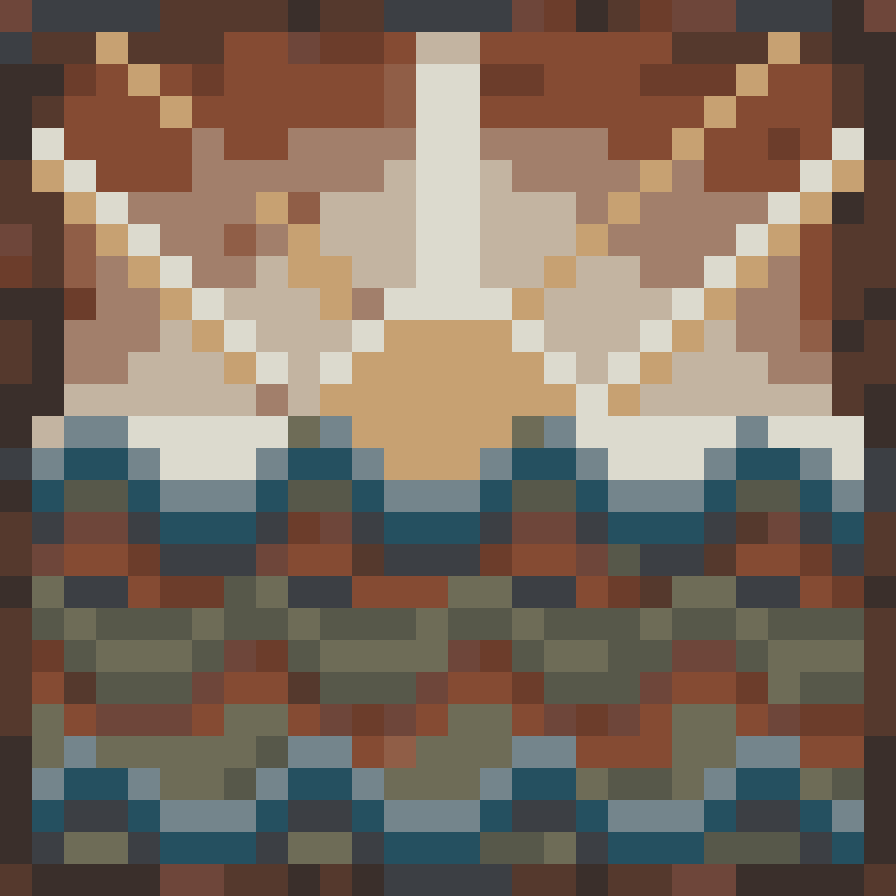
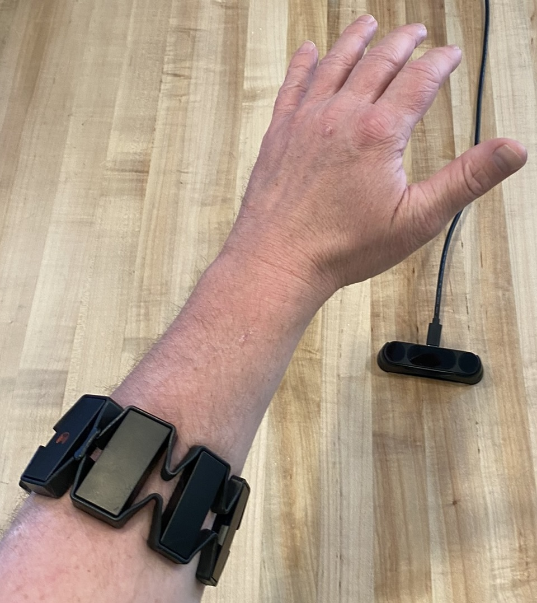

WEATHER · 2026
Rainbow Radar
Explore rain and sunlight conditions to see where a rainbow may appear.

WEATHER · 2026
Explore rain and sunlight conditions to see where a rainbow may appear.

HAND GESTURE ENCYCLOPEDIA · 2026
Explore hand gestures, discover their meanings, and practice them in your browser.

VISUAL PERCEPTION · 2026
Explore optical illusions, color studies, and experimental variations in an interactive lab.

CHINESE CHARACTER PLAY · 2026
Take Chinese characters apart, explore their pieces, and put them back together.

INTERACTIVE WORLDS · 2026
Explore the Torus Home, an O’Neill cylinder, or the home inside its larger world.

LANGUAGE PROJECT
Maryknoll Taiwanese-English dictionary files formatted for Pleco.

CREATIVE TOOL · 2026
Create, shuffle, and share colorful 28 × 28 mosaics.
ENGINEERING EXPERIENCE
An overview of engineering experience, research, and selected projects.

ENGINEERING MANAGEMENT · THESIS
Predicting continuous finger motion from wearable muscle signals.